For my final project in this module, I wanted to make a keypad with function keys for the laptop. My current keyboard that I am using is a small form factor keyboard, as a result it is lacking the function row. During class work, I tend to use the function keys a lot in other programs, and it is slowly starting to become a hassle to press function with my left hand while doing work. Moreover, I wanted to experiment with virtual-usb for the atmega328. So, I decided to make a 12 key function pad, with F1-F12 as its binds. I also had some cherry mx style mechanical keyboard switches lying around so I wanted to incorporate it into my project.
To get started on the PCB design, I first referenced an example of a v-usb keyboard by OBDEV found here. The zip file given contains a schematic that I referenced.
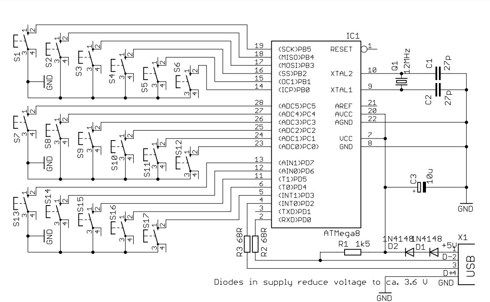I referenced the connections of the oscillator, decoupling capacitor, and most importantly the connections for the USB. Originally, I wanted to make one large PCB with the cherry mx switch profile. The footprint is a modified version of a library from this github repository. I modified it to not have the stabalising pins on the sides, and to include the footprint for a keycap, as it would make the layout of the switches easier.
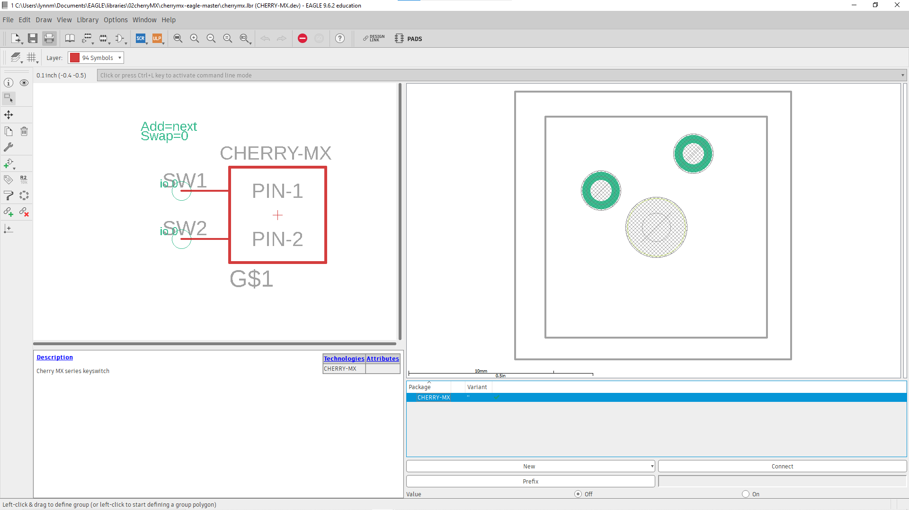However, at this point I got a bit nervous about the size of the PCB. Each keycap had a length and width of 18mm, and with space between the keycaps, space for all the other components, and routing all the traces on a single layer, the PCB required would be bigger than the small rectangles we got. While the fablab did have larger PCBs available, I felt that I would mess up quite often during the manufacturing. As such, I opted for a different approach.
This may be a cop out, but my final PCB idea is to use the pads for an 8x1 header as the outputs to the switches, and solder wires directly on. I know that wires are frowned upon, but at this point I felt it was better than having a lot of screw up with larger PCBs (which was a hunch that paid off, as I will write about later). After some redesigning, replacing the USB A with a mini USB, replacing the oscillator and capacitors with a resonator (recommended by my lecturer Mr Steven Chew), adding an ISP header to program and a reset button, here was my final PCB schematic and design. The traces were all width 16, and DRC was done with clearance 12.
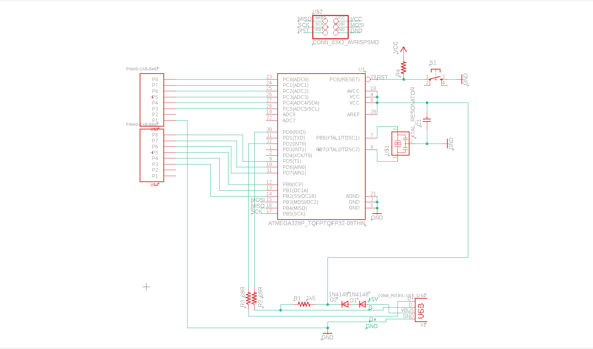 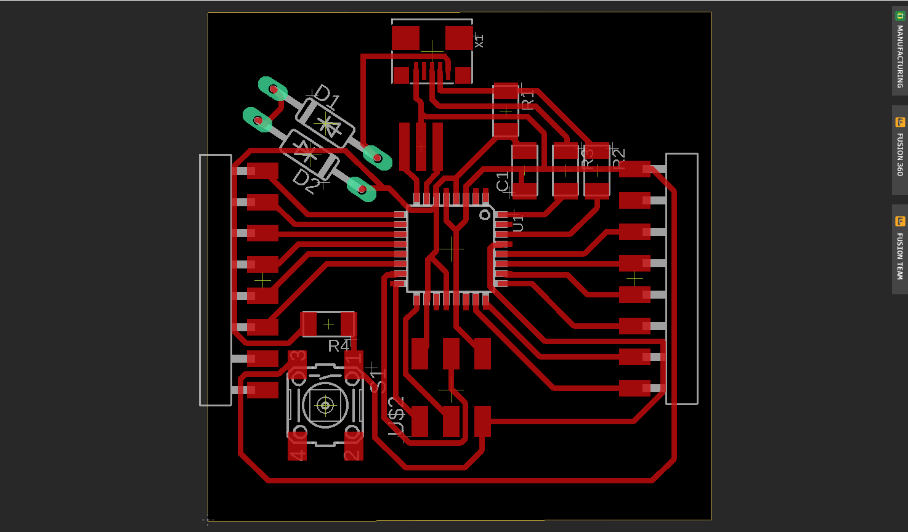Now that the design was done, it is time to make the PCB, which is when the hell began. I generated the gcode using mods like in Electronics Production assignment, using the same settings.
Because I made the PCB fit in the small PCB blanks, I could go in anytime to use the CNC machines. However, I faced a lot of problems with the manufacturing. One was that the number of "good" bits were very little. As it was near the end of the semester, most of the 10 degree bits have chipped or broken off. Still, I found a decent bit and tried to mill it for the first time.
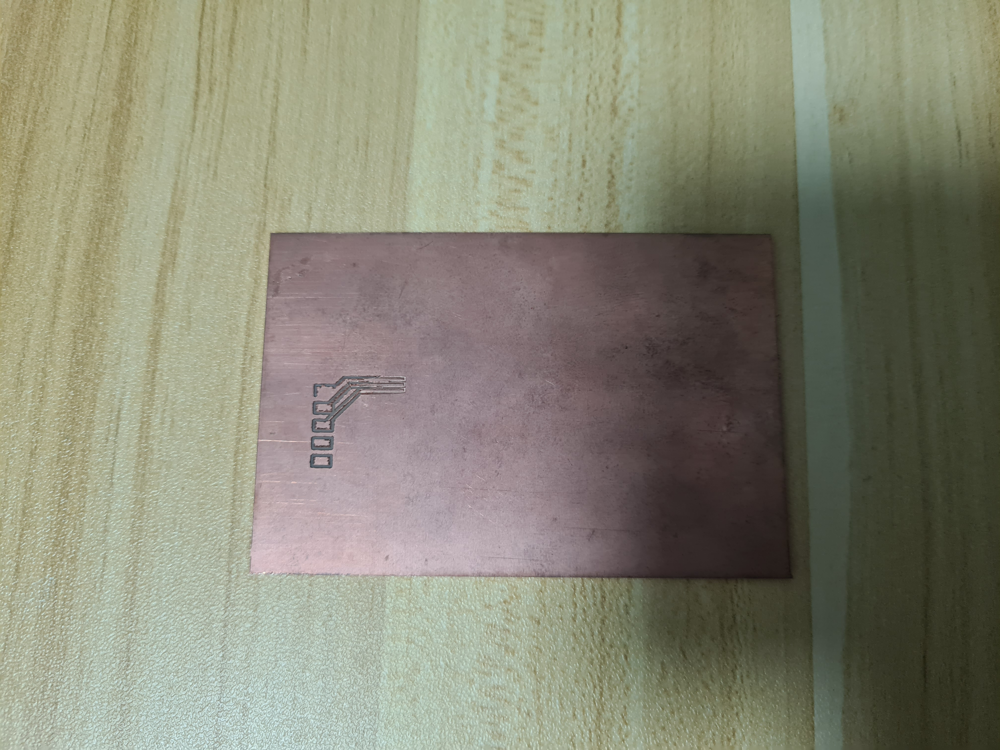And it was an immediate failure. Even though the first few cuts went well, but then the mill just stopped cutting deep enough. I thought this was just due to me not pressing down the PCB blank hard enough, so I tried again, and again.
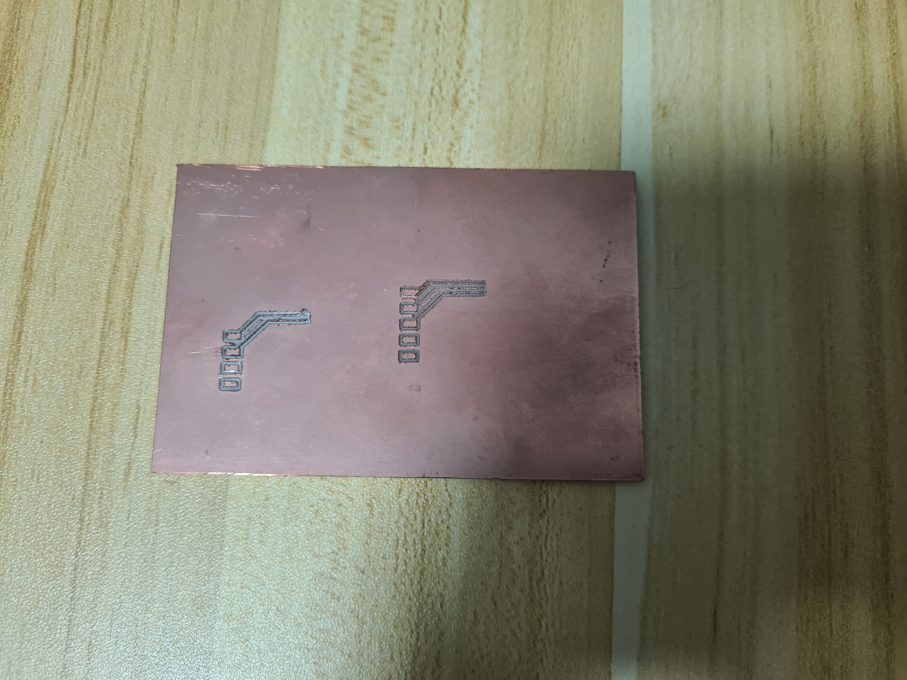This time, the PCB was cutting too deep. I tried 2 times on the same PCB as a test. Both times, the traces seem too thin and were being ripped. For this test, instead of using the Z-probe for the cnc machine, I used a paper method recommended by my classmate Zi Hon. The first one still seemed too deep, so i upped the height by 0.025, half the depth of cut. Even then in the second test, the trace still seems too deep. At this point, I switched to a different machine and tried another time.
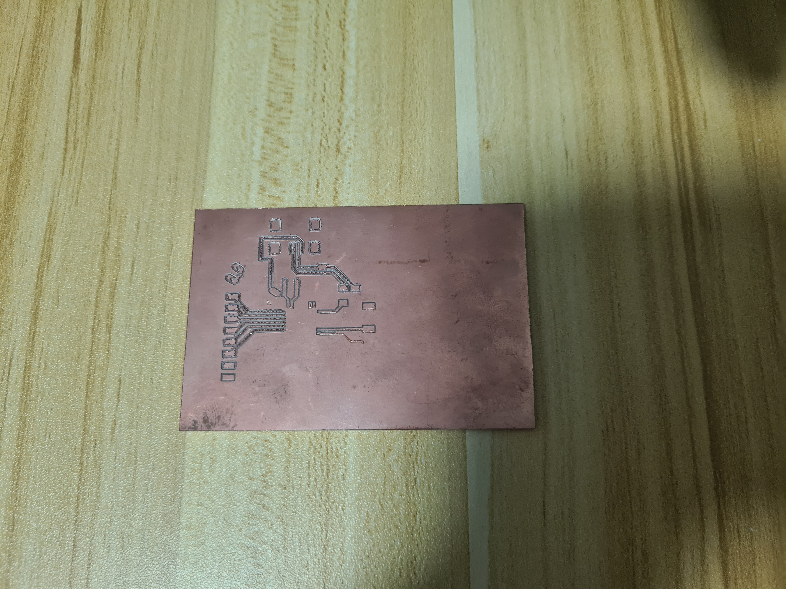The first trace (the pad on the bottom right) went really well, so I thought that it was at the correct depth. Then it did the third pad and trace and it all went downhill. Still, I just let it continue to see how it goes. This was when it got weird. Even though the depth of cut never changed, the middle of the PCB cut perfectly fine, but the rest was still unusuable.
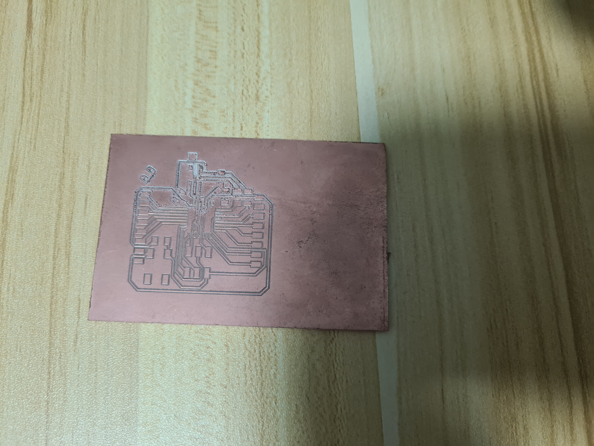This attempt was my best PCB of the day, and even then half of it is unusable. I thought that it was no longer a depth of cut problem and more that the PCB was uneven, which was weird because I hammered it down. At this point, Zi Hon wanted to try helping me mill the PCB.
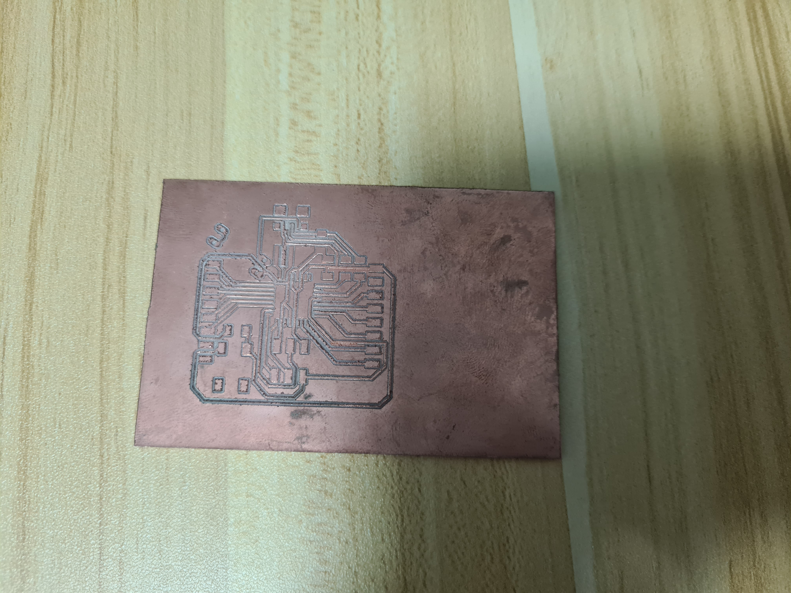Even though he got his own PCB's milled well, he had no luck with mine. Even on the same machine, it ended up somehow worse than the previous attempt. At this point I wanted to give up and went to Mr Steven Chew, who asked me to send him the Eagle Files. After a few days, he helped me set up the PCB again with a modified board setup. He said he spaced out the componenets to make it easier for me to solder. This time he set it up in a different pocket of the same machine I used previously, with a different bit, a different feed rate of 150 and 2 passes instead of 1.
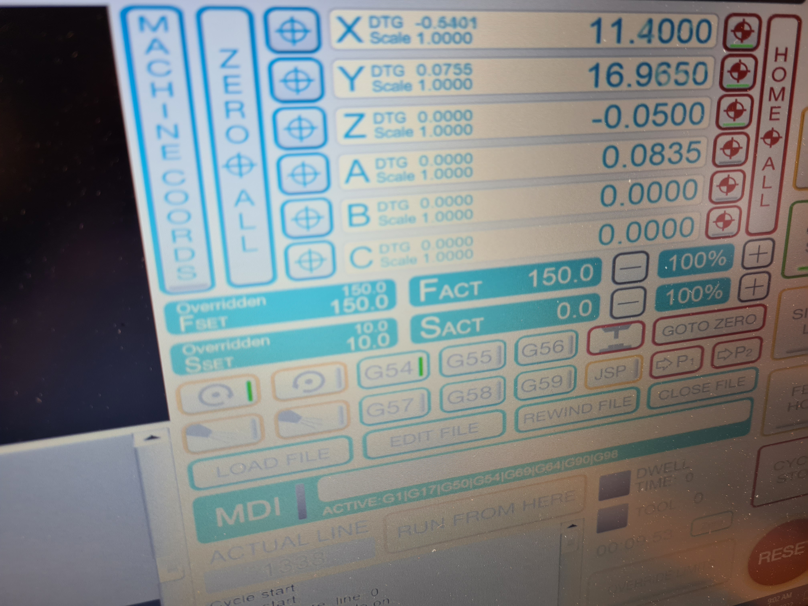 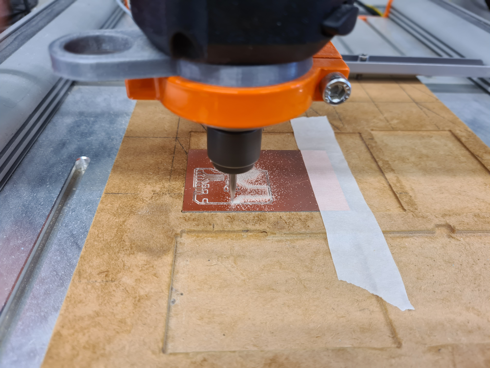At first, I thought that it was also cutting too deep because there was more dust than what I was used to, but Mr Steven Chew said that it was a normal amount of material, so I just accepted that and let it run.
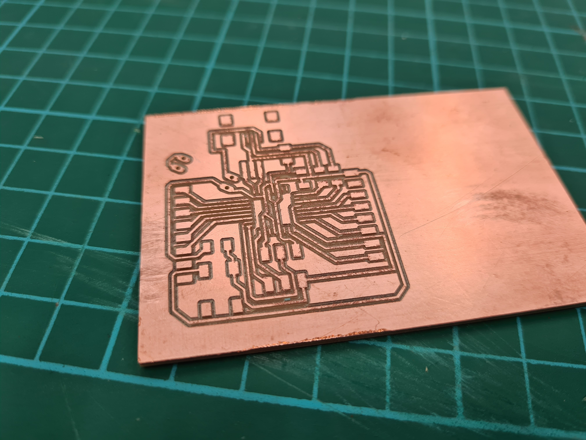Finally, I got a good PCB mill done. The traces came out perfect, even the small mini usb traces were well milled. I think that my previous failures were due to a blunt bit, where even if the tip was sharp and the depth was correct, the bit was tearing up the trace, causing it to be thinner than normal. At this point, I just took what I got and moved on. Honestly, I am kind of glad I went with the smaller design, because I cannot imagine how much worse a large PCB would be.
I gave it a quick pass with sandpaper to knock down the little burr left on the traces, and went on to solder.
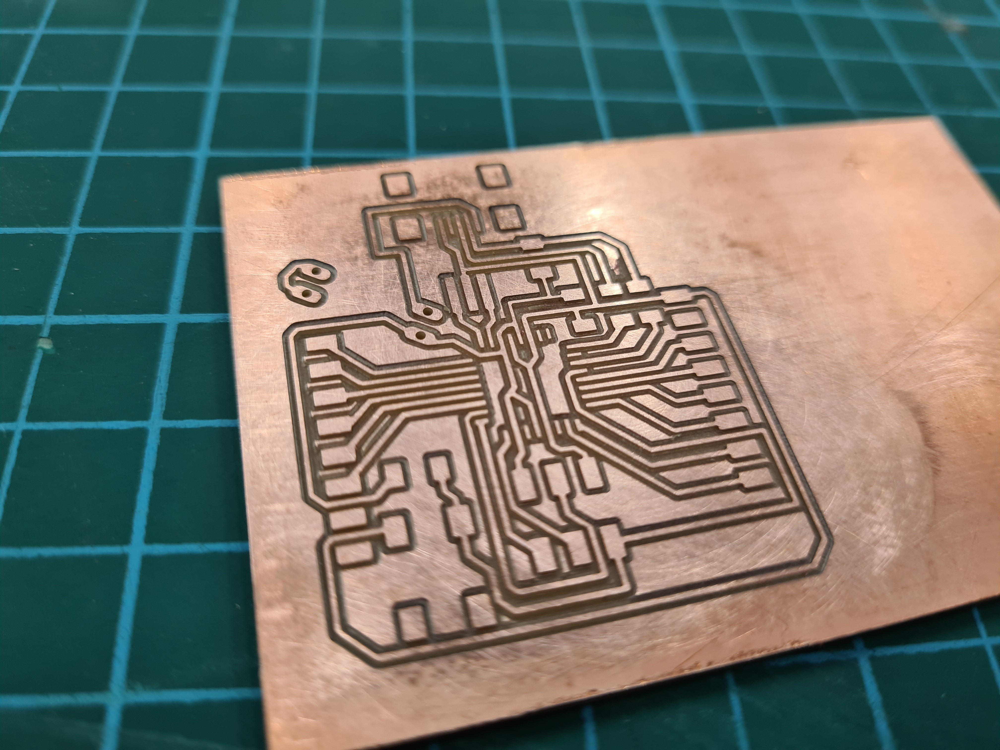The components I needed to stuff the PCB are:
Referencing the schematic and board earlier, I started with the hardest part, the atmega328. Similar to how I did the attiny, I first started at one of the corner pins.
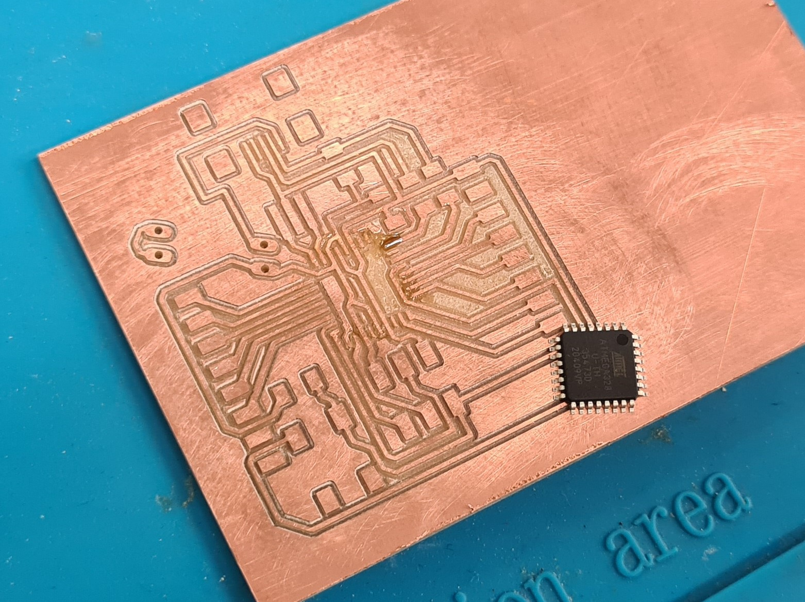Although I soldered my programmer and hello boards before, the pins of the atmega328 were tinier than I imagined. Zi Hon helped me a lot here, and taught me how to solder the pins efficiently. He showed me on one side of the atmega. He put a lot of flux on the pads of the PCB and the atmega chip. Afterwards, he got a small amount of solder onto the iron and in one pass, dragged the iron over the pins and let surface tension take over. The result is that all the pins were soldered and due to the small amount of solder, there was not enough to short 2 adjacent pins together. I used this method to solder on the rest of the atmega.
After this, I tackled the resonator. As the pads of the resonator completely cover the traces, I had to use the heatgun to solder on the component. I first put a small amount of solder onto the pads, then placed the resonator on it. Using the heatgun, I carefully heated up the pads underneath, taking care to not reheat the atmega. After a few minutes of struggling, I got the resonator soldered on.
At this point, I also tackled the mini usb. After the atmega, this was not really that bad, and it went down well.
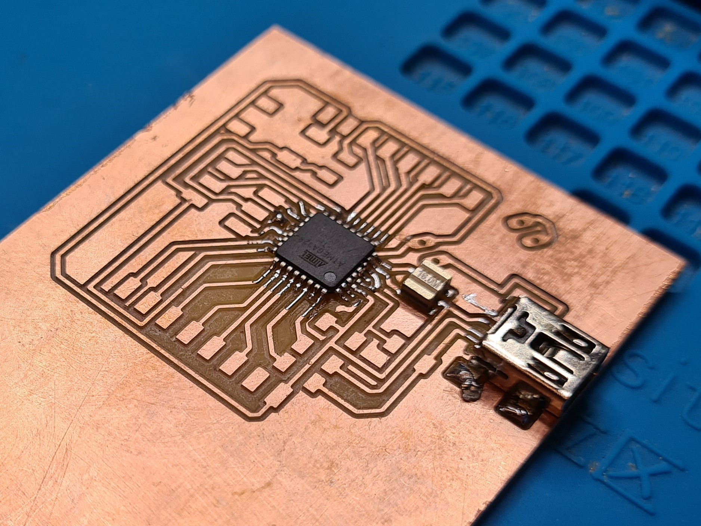This was when I encountered an issue, not a major issue but just something to take note of in the future. When soldering on the housing(?) of the mini usb to the PCB, I accidentally put too much solder on one of the pads and the pad connected to the rest of the PCB (as shown above, near the bottom right). I tried to remelt the solder to remove it, but no matter how long I put the iron on the blob, it would not melt. This is when I realised that, essentially, the large sheet of copper connected was acting like a heat sink to the pad, and all the heat I was adding to the pad was being removed just as quickly and being dispersed. After a few minutes, I just gave up and left it as is, as it did not affect other components anyways.
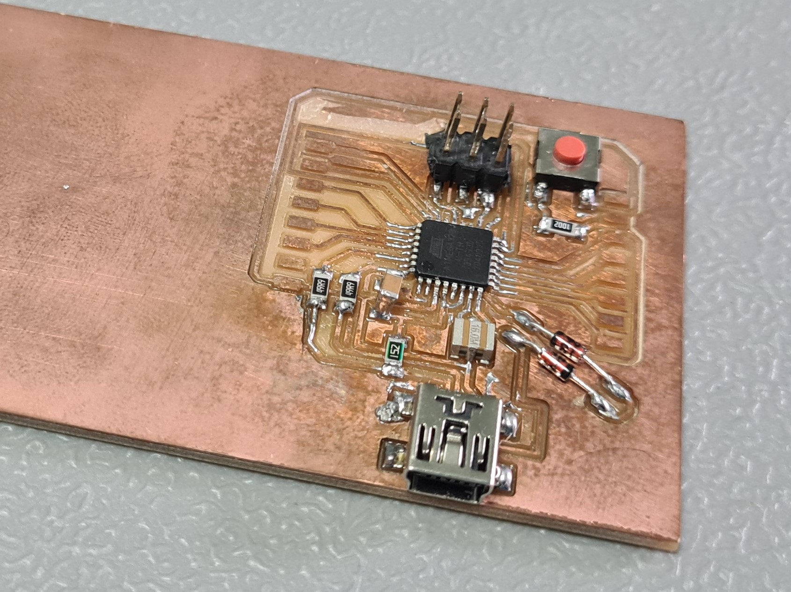The rest of the components went down well. The only issue I faced was that I forgot that 2 bypass capacitors were needed, but I forgot it in the design. Luckily, the capacitors are supposed to be in parallel, so I just stacked the 2. Unelegant, yes, but I had no other options really. And with that, the PCB is (mostly) done and I tested it using the programmer.
I opened up terminal and ran "avrdude -pm328 -cusbtiny", and it was able to recognise the chip, which is good news. That means that I can try programming this using arduino IDE to test.
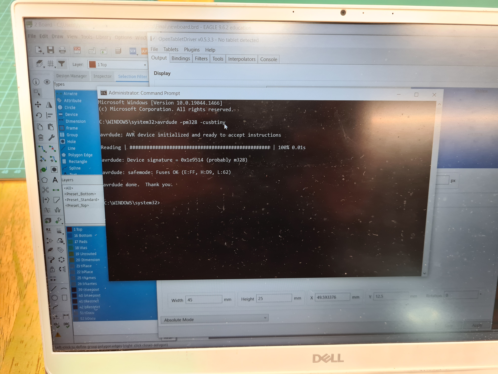